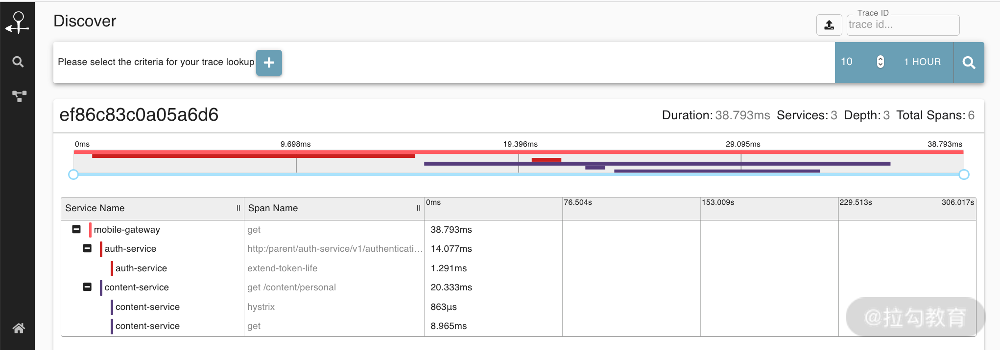

- 00 开篇词：搭建分布式知识体系，挑战高薪 Offer.md.html
- 01 如何证明分布式系统的 CAP 理论？.md.html
- 02 不同数据一致性模型有哪些应用？.md.html
- 03 如何透彻理解 Paxos 算法？.md.html
- 04 ZooKeeper 如何保证数据一致性？.md.html
- 05 共识问题：区块链如何确认记账权？.md.html
- 06 如何准备一线互联网公司面试？.md.html
- 07 分布式事务有哪些解决方案？.md.html
- 08 对比两阶段提交，三阶段协议有哪些改进？.md.html
- 09 MySQL 数据库如何实现 XA 规范？.md.html
- 10 如何在业务中体现 TCC 事务模型？.md.html
- 11 分布式锁有哪些应用场景和实现？.md.html
- 12 如何使用 Redis 快速实现分布式锁？.md.html
- 13 分布式事务考点梳理 + 高频面试题.md.html
- 14 如何理解 RPC 远程服务调用？.md.html
- 15 为什么微服务需要 API 网关？.md.html
- 16 如何实现服务注册与发现？.md.html
- 17 如何实现分布式调用跟踪？.md.html
- 18 分布式下如何实现配置管理？.md.html
- 19 容器化升级对服务有哪些影响？.md.html
- 20 ServiceMesh：服务网格有哪些应用？.md.html
- 21 Dubbo vs Spring Cloud：两大技术栈如何选型？.md.html
- 22 分布式服务考点梳理 + 高频面试题.md.html
- 23 读写分离如何在业务中落地？.md.html
- 24 为什么需要分库分表，如何实现？.md.html
- 25 存储拆分后，如何解决唯一主键问题？.md.html
- 26 分库分表以后，如何实现扩容？.md.html
- 27 NoSQL 数据库有哪些典型应用？.md.html
- 28 ElasticSearch 是如何建立索引的？.md.html
- 29 分布式存储考点梳理 + 高频面试题.md.html
- 30 消息队列有哪些应用场景？.md.html
- 31 集群消费和广播消费有什么区别？.md.html
- 32 业务上需要顺序消费，怎么保证时序性？.md.html
- 33 消息幂等：如何保证消息不被重复消费？.md.html
- 34 高可用：如何实现消息队列的 HA？.md.html
- 35 消息队列选型：Kafka 如何实现高性能？.md.html
- 36 消息队列选型：RocketMQ 适用哪些场景？.md.html
- 37 消息队列考点梳理 + 高频面试题.md.html
- 38 不止业务缓存，分布式系统中还有哪些缓存？.md.html
- 39 如何避免缓存穿透、缓存击穿、缓存雪崩？.md.html
- 40 经典问题：先更新数据库，还是先更新缓存？.md.html
- 41 失效策略：缓存过期都有哪些策略？.md.html
- 42 负载均衡：一致性哈希解决了哪些问题？.md.html
- 43 缓存高可用：缓存如何保证高可用？.md.html
- 44 分布式缓存考点梳理 + 高频面试题.md.html
- 45 从双十一看高可用的保障方式.md.html
- 46 高并发场景下如何实现系统限流？.md.html
- 47 降级和熔断：如何增强服务稳定性？.md.html
- 48 如何选择适合业务的负载均衡策略？.md.html
- 49 线上服务有哪些稳定性指标？.md.html
- 50 分布式下有哪些好用的监控组件？.md.html
- 51 分布式下如何实现统一日志系统？.md.html
- 52 分布式路漫漫，厚积薄发才是王道.md.html
- 捐赠
17 如何实现分布式调用跟踪？
分布式服务拆分以后，系统变得日趋复杂，业务的调用链也越来越长，如何快速定位线上故障，就需要依赖分布式调用跟踪技术。下面我们一起来看下分布式调用链相关的实现。
为什么需要分布式调用跟踪
随着分布式服务架构的流行，特别是微服务等设计理念在系统中的应用，系统架构变得越来越分散，如下图所示。
可以看到，随着服务的拆分，系统的模块变得越来越多，不同的模块可能由不同的团队维护，一个请求可能会涉及几十个服务的协同处理， 牵扯到多个团队的业务系统。
假设现在某次服务调用失败，或者出现请求超时，需要定位具体是哪个服务引起的异常，哪个环节导致的超时，就需要去每个服务里查看日志，这样的处理效率是非常低的。
另外，系统拆分以后，缺乏一个自上而下全局的调用 ID，如何有效地进行相关的数据分析工作呢？比如电商的活动转化率、购买率、广告系统的点击链路等。如果没有一个统一的调用 ID 来记录，只依靠业务上的主键等是很难实现的，特别是对于一些大型网站系统，如淘宝、京东等，这些问题尤其突出。
分布式调用跟踪的业务场景
分布式调用跟踪技术就是解决上面的业务问题，即通过调用链的方式，把一次请求调用过程完整的串联起来，这样就实现了对请求调用路径的监控。
分布式调用链其实就是将一次分布式请求还原成调用链路，显式的在后端查看一次分布式请求的调用情况，比如各个节点上的耗时、请求具体打到了哪台机器上、每个服务节点的请求状态等。
一般来说，分布式调用跟踪可以应用在以下的场景中。
- 故障快速定位：通过调用链跟踪，一次请求的逻辑轨迹可以完整清晰地展示出来。在开发的过程中，可以在业务日志中添加调用链 ID，还可以通过调用链结合业务日志快速定位错误信息。
- 各个调用环节的性能分析：在调用链的各个环节分别添加调用时延，并分析系统的性能瓶颈，进行针对性的优化。
- 各个调用环节的可用性，持久层依赖等：通过分析各个环节的平均时延、QPS 等信息，可以找到系统的薄弱环节，对一些模块做调整，比如数据冗余等。
- 数据分析等：调用链是一条完整的业务日志，可以得到用户的行为路径，并汇总分析。
分布式调用跟踪实现原理
分布式链路跟踪的技术实现，主要是参考 Google 的 Dapper 论文，分布式调用跟踪是一种全链路日志，主要的设计基于 Span 日志格式，下面简单介绍这个日志结构。
Dapper 用 Span 来表示一个服务调用开始和结束的时间，也就是时间区间，并记录了 Span 的名称以及每个 Span 的 ID 和父 ID，如果一个 Span 没有父 ID 则被称之为 Root Span。
一个请求到达应用后所调用的所有服务，以及所有服务组成的调用链就像是一个树结构，追踪这个调用链路得到的树结构称之为 Trace，所有的 Span 都挂在一个特定的 Trace 上，共用一个 TraceId。

在一次 Trace 中，每个服务的每一次调用，就是一个 Span，每一个 Span 都有一个 ID 作为唯一标识。同样，每一次 Trace 都会生成一个 TraceId 在 Span 中作为追踪标识，另外再通过一个 parentSpanId，标明本次调用的发起者。
当 Span 有了上面三个标识后，就可以很清晰地将多个 Span 进行梳理串联，最终归纳出一条完整的跟踪链路。
确定了日志格式以后，接下来日志如何采集和解析，日志的采集和存储有许多开源的工具可以选择。一般来说，会使用离线 + 实时的方式去存储日志，主要是分布式日志采集的方式，典型的解决方案如 Flume 结合 Kafka 等 MQ，日志存储到 HBase 等存储中，接下来就可以根据需要进行相关的展示和分析。
分布式调用跟踪的选型
大的互联网公司都有自己的分布式跟踪系统，比如前面介绍的 Google 的 Dapper、Twitter 的 Zipkin、淘宝的鹰眼等。
Google 的 Drapper
Dapper 是 Google 生产环境下的分布式跟踪系统，没有对外开源，但是 Google 发表了“Dapper - a Large-Scale Distributed Systems Tracing Infrastructure”论文，介绍了他们的分布式系统跟踪技术，所以后来的 Zipkin 和鹰眼等都借鉴了 Dapper 的设计思想。
Twitter 的 Zipkin
Zipkin 是一款开源的分布式实时数据追踪系统，基于 Google Dapper 的论文设计而来，由 Twitter 公司开发贡献。其主要功能是聚集来自各个异构系统的实时监控数据，用来追踪微服务架构下的系统延时问题，Zipkin 的用户界面可以呈现一幅关联图表，以显示有多少被追踪的请求通过了每一层应用。

阿里的 EagleEye
EagleEye 鹰眼系统是 Google 的分布式调用跟踪系统 Dapper 在淘宝的实现，EagleEye 没有开源。下面这段介绍来自 阿里中间件团队：
前端请求到达服务器，应用容器在执行实际业务处理之前，会先执行 EagleEye 的埋点逻辑。埋点逻辑为这个前端请求分配一个全局唯一的调用链 ID，即 TraceId。埋点逻辑把 TraceId 放在一个调用上下文对象里面，而调用上下文对象会存储在 ThreadLocal 里面。调用上下文里还有一个 ID 非常重要，在 EagleEye 里面被称作 RpcId。RpcId 用于区分同一个调用链下的多个网络调用的发生顺序和嵌套层次关系。
当这个前端执行业务处理需要发起 RPC 调用时，RPC 调用客户端会首先从当前线程 ThreadLocal 上面获取之前 EagleEye 设置的调用上下文；然后，把 RpcId 递增一个序号；之后，调用上下文会作为附件随这次请求一起发送到下游的服务器。
关于鹰眼的详细介绍，这里有一篇分享非常不错，即鹰眼下的淘宝：分布式调用跟踪系统。
总结
这一课时主要分享了分布式调用跟踪的应用场景、调用链的日志结构、分布式链路跟踪的选型实现等。
现在思考一下，了解了链路跟踪的日志格式，如果让你来设计一个调用跟踪系统，除了基本的链路跟踪功能，还需要满足哪些功能设计呢？
举个例子，在实际业务中，链路跟踪系统会有一个采样率配置，不会监控全部的链路，其实是考虑到对系统性能的影响。所以，作为非业务组件，应当尽可能少侵入或者无侵入其他业务系统，并且尽量少的占用系统资源。
© 2019 - 2023 Liangliang Lee. Powered by gin and hexo-theme-book.